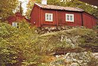

Södermalm i tid och rum. Stockholm
Kvastmakarbacken 4Fastigheten består av tre små trähus om vardera ett rum och kök. Den norra och östra stugan är möjligen från 1700-talet, den västra troligen från 1800-talets mitt. Husen behåller ännu sin genuina ålderdomliga karaktär.
